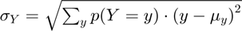
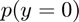
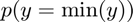
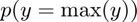
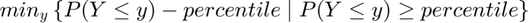
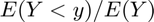
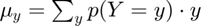
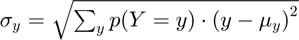

Compute Distributional Statistics from a Discrete Random Variable
back to Fan's Dynamic Assets Repository Table of Content.
Contents
function [ds_stats_map] = fft_disc_rand_var_stats(varargin)
FFT_DISCT_RAND_VAR_STATS compute mean, sd, percentiles
Model simulation generates discrete random variables, to analyze, need to calculate various statistics
Statistics include:
- $\mu_Y = E(Y) = \sum_{y} p(Y=y) \cdot y $
- 
- 
- 
- 
- percentiles: 
- fraction of outcome held by up to percentiles: 
@param ar_choice_unique_sorted array 1 by N elements in the sample space of the discrete random variable ordered. Unique consumption values ordered. Unique asset choices ordered. etc.
@param ar_choice_prob array 1 by N probability mass function associated with each element ar_choice_unique_sorted
@param ar_fl_percentiles array 1 by M some vector of percentiles (0 to 100) that we would like to compute based on the discrete random variable's probability mass function and x values.
@return ds_stats_map container various distributional statistics
@example
% run function [ds_stats_map] = fft_disc_rand_var_stats(ar_choice_unique_sorted, ar_choice_prob,ar_fl_percentiles); % retrieve scalar statistics % fl_choice_mean = ds_stats_map('fl_choice_mean'); fl_choice_sd = ds_stats_map('fl_choice_sd'); fl_choice_prob_zero = ds_stats_map('fl_choice_prob_zero'); fl_choice_prob_max = ds_stats_map('fl_choice_prob_max'); % retrieve distributional array stats ar_choice_percentiles = ds_stats_map('ar_choice_percentiles'); ar_choice_perc_fracheld = ds_stats_map('ar_choice_perc_fracheld');
Default
use binomial as test case
fl_binom_n = 30; fl_binom_p = 0.3; ar_binom_x = 0:1:fl_binom_n; % x ar_choice_unique_sorted = ar_binom_x; % f(x) ar_choice_prob = binopdf(ar_binom_x, fl_binom_n, fl_binom_p); % percentiles of interest ar_fl_percentiles = [0.1 1 5:5:25 35:15:65 75:5:95 99 99.9]; % display st_var_name = 'binom'; % display bl_display_drvstats = true; % default default_params = {st_var_name ar_choice_unique_sorted ar_choice_prob ar_fl_percentiles bl_display_drvstats};
Parse Parameters
[default_params{1:length(varargin)}] = varargin{:};
[st_var_name, ar_choice_unique_sorted, ar_choice_prob, ar_fl_percentiles, bl_display_drvstats] = default_params{:};
f(y), f(c), f(a): Compute Scalar Statistics for outcomes
Compute these outcomes:
- mean: 
- sd: 
- prob(outcome=0):
- prob(outcome=max(outcome)):
% Mean of discrete random variable fl_choice_mean = ar_choice_prob*ar_choice_unique_sorted'; % SD of discrete random variable fl_choice_sd = sqrt(ar_choice_prob*((ar_choice_unique_sorted'-fl_choice_mean).^2)); % Coef of Variation of discrete random variable fl_choice_coefofvar = fl_choice_sd/fl_choice_mean; % Coef of Variation of discrete random variable fl_choice_min = min(ar_choice_unique_sorted); % Coef of Variation of discrete random variable fl_choice_max = max(ar_choice_unique_sorted); % prob(outcome=min(outcome)), fraction of people not saving for example fl_choice_prob_min = sum(ar_choice_prob(ar_choice_unique_sorted == min(ar_choice_unique_sorted))); % prob(outcome=0), fraction of people not saving for example fl_choice_prob_zero = sum(ar_choice_prob(ar_choice_unique_sorted == 0)); % prob(outcome=max(outcome)), fraction of people saving up to max of grid, % in principle if this is large, need to increase grid max value fl_choice_prob_max = sum(ar_choice_prob(ar_choice_unique_sorted == max(ar_choice_unique_sorted)));
f(y), f(c), f(a): Compute Distributional Statistics for outcomes
Compute these outcomes:
- percentiles:
- share of outcome (consumption/assets) held by households below this percentile:
% cumulative share of total outcome held by up to this level for outcomes % like fraction of asset held by lowest highest fractions: E(X<x) ar_choice_unique_cumufrac = cumsum(ar_choice_prob.*ar_choice_unique_sorted)/fl_choice_mean; % Key Percentile Statistics ar_choice_prob_cumsum = cumsum(ar_choice_prob)*100; % ar_choice_percentiles: percentiles for the outcome variable ar_choice_percentiles = zeros(size(ar_fl_percentiles)); % fraction of aggregate outcome variable held up to this percentile ar_choice_perc_fracheld = zeros(size(ar_fl_percentiles)); for it_percentile = 1:length(ar_fl_percentiles) % get percentile of interest fl_cur_percentile = ar_fl_percentiles(it_percentile); % in the cumu prob array, first element higher or equal to current % percentile it_first_higher_idx = (cumsum(ar_choice_prob_cumsum >= fl_cur_percentile) == 1); % assign percentile ar_choice_percentiles(it_percentile) = ar_choice_unique_sorted(it_first_higher_idx); % asset held by up to this percentile ar_choice_perc_fracheld(it_percentile) = ar_choice_unique_cumufrac(it_first_higher_idx); end
Collect Statistics
ds_stats_map = containers.Map('KeyType','char', 'ValueType','any'); % scalar statistics ds_stats_map('fl_choice_mean') = fl_choice_mean; ds_stats_map('fl_choice_sd') = fl_choice_sd; ds_stats_map('fl_choice_coefofvar') = fl_choice_coefofvar; ds_stats_map('fl_choice_min') = fl_choice_min; ds_stats_map('fl_choice_max') = fl_choice_max; ds_stats_map('fl_choice_prob_zero') = fl_choice_prob_zero; ds_stats_map('fl_choice_prob_min') = fl_choice_prob_min; ds_stats_map('fl_choice_prob_max') = fl_choice_prob_max; % distributional array stats tb_prob_drv = array2table([ar_fl_percentiles' ar_choice_percentiles' ar_choice_perc_fracheld']); st_var_name = [char(st_var_name) ' percentile values']; tb_prob_drv.Properties.VariableNames = matlab.lang.makeValidName(["percentiles", st_var_name, "frac of sum held below this percentile"]); ds_stats_map('tb_prob_drv') = tb_prob_drv;
Display
if (bl_display_drvstats) disp('fl_choice_mean'); disp(fl_choice_mean); disp('fl_choice_sd'); disp(fl_choice_sd); disp('fl_choice_coefofvar'); disp(fl_choice_coefofvar); disp('fl_choice_prob_zero'); disp(fl_choice_prob_zero); disp('fl_choice_prob_max'); disp(fl_choice_prob_max); disp('tb_prob_drv'); disp(tb_prob_drv); end
fl_choice_mean
9
fl_choice_sd
2.5100
fl_choice_coefofvar
0.2789
fl_choice_prob_zero
2.2539e-05
fl_choice_prob_max
2.0589e-16
tb_prob_drv
percentiles binomPercentileValues fracOfSumHeldBelowThisPercentile
___________ _____________________ ________________________________
0.1 2 0.00043239
1 4 0.012095
5 5 0.037895
10 6 0.09318
15 6 0.09318
20 7 0.18796
25 7 0.18796
35 8 0.32141
50 9 0.47871
65 10 0.636
75 11 0.77082
80 11 0.77082
85 12 0.87062
90 12 0.87062
95 13 0.93478
99 15 0.98835
99.9 17 0.99872
end
ans =
Map with properties:
Count: 9
KeyType: char
ValueType: any